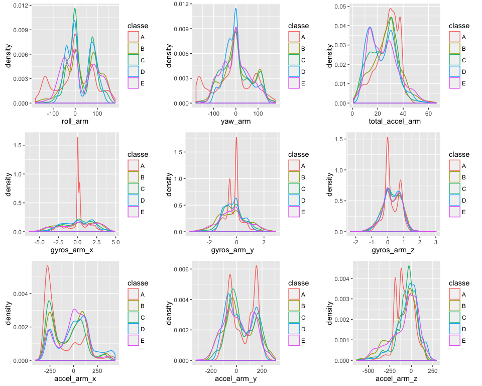
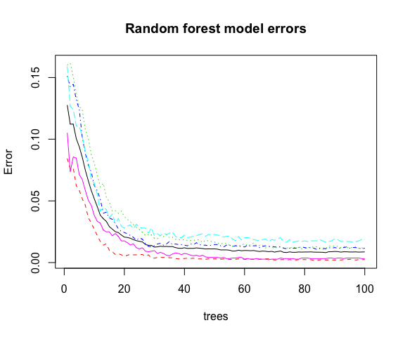

The goal of this project is to find a prediction model that would be able to correctly classify activity type of the individual based on dataset contaning measurements from accelerometers on the belt, forearm, arm, and dumbell of 6 participants.
library(caret)
library(e1071)
library(randomForest)
library(ggplot2)
library(grid)
library(gridExtra)
motiondata <- read.csv("pml-training.csv")
quizdata <- read.csv("pml-testing.csv")Looking at the variables in the dataset we can see that there are lots of columns with NA values and it makes no sense to use them for prediction. Some other columns in the beginning of the dataset are also not needed and will be removed at the cleaning stage.
To give an idea on how prediction model may distinguish between different activity types we can look at the density graphs of different predictors values.
q1 <- qplot(roll_arm, data = motiondata, geom = "density", color = classe)
q2 <- qplot(yaw_arm, data = motiondata, geom = "density", color = classe)
q3 <- qplot(total_accel_arm, data = motiondata, geom = "density", color = classe)
q4 <- qplot(gyros_arm_x, data = motiondata, geom = "density", color = classe)
q5 <- qplot(gyros_arm_y, data = motiondata, geom = "density", color = classe)
q6 <- qplot(gyros_arm_z, data = motiondata, geom = "density", color = classe)
q7 <- qplot(accel_arm_x, data = motiondata, geom = "density", color = classe)
q8 <- qplot(accel_arm_y, data = motiondata, geom = "density", color = classe)
q9 <- qplot(accel_arm_z, data = motiondata, geom = "density", color = classe)
graphs <- arrangeGrob(q1, q2, q3, q4, q5, q6, q7, q8, q9, ncol = 3)
grid.draw(graphs)
Keep columns which may be useful for prediction (measurements from sensors), remove columns with NA values and some other columns which make no sense for prediction, such as measurement number, different timestamps, window flag, window number and user name.
varnames <- c("roll_belt", "pitch_belt", "yaw_belt", "total_accel_belt",
"gyros_belt_x", "gyros_belt_y", "gyros_belt_z",
"accel_belt_x", "accel_belt_y", "accel_belt_z", "magnet_belt_x",
"magnet_belt_y", "magnet_belt_z", "roll_arm", "pitch_arm",
"yaw_arm", "total_accel_arm", "gyros_arm_x", "gyros_arm_y",
"gyros_arm_z", "accel_arm_x", "accel_arm_y", "accel_arm_z",
"magnet_arm_x", "magnet_arm_y", "magnet_arm_z", "roll_dumbbell",
"pitch_dumbbell", "yaw_dumbbell", "total_accel_dumbbell",
"gyros_dumbbell_x", "gyros_dumbbell_y", "gyros_dumbbell_z",
"accel_dumbbell_x", "accel_dumbbell_y", "accel_dumbbell_z",
"magnet_dumbbell_x", "magnet_dumbbell_y", "magnet_dumbbell_z",
"roll_forearm", "pitch_forearm", "yaw_forearm",
"total_accel_forearm", "gyros_forearm_x", "gyros_forearm_y",
"gyros_forearm_z", "accel_forearm_x", "accel_forearm_y",
"accel_forearm_z", "magnet_forearm_x", "magnet_forearm_y",
"magnet_forearm_z")
cleandata <- motiondata[, c(varnames, "classe")]
cleanquizdata <- quizdata[, c(varnames, "problem_id")]Test predictors for variance with the function nearZeroVar. If the variance is close to zero, it will not contribute to prediction and that predictor can be removed from the model.
nearZeroVar(training, saveMetrics = TRUE)To keep the report concise, the output is not shown here but the variance of all the predictiors in the cleaned dataset is not close to zero thus all the predictors will be used for further modeling.
The strategy for model selection is:
1. Divide the dataset to training and testing set for each model that will be tested.
2. Try different models. The model with the best accuracy on the test set will be chosen for prediction on the quiz dataset.
During this project several models were tested, such as:
* k-nearest neighbors (knn) with estimated accuracy ~ 90%. The algorithm was computationally expensive.
* Recursive Partitioning and Regression Trees (rpart) with very low accuracy ~ 50%.
* Linear discriminant analysis (lda) (more details below)
* Support Vector Machine (svm) with radial kernel (more details below)
* Random forrest (more details below)
Only lda, svm and rf models are included in this document.
A training set and a test set for each model will be generated independently with recommended proportion 60% for a training and 40% for a test set.
set.seed(1234)
inTrain.lda <- createDataPartition(y = cleandata$classe, p = 0.6, list = FALSE)
training.lda <- cleandata[inTrain.lda,]
testing.lda <- cleandata[-inTrain.lda,]
inTrain.svm <- createDataPartition(y = cleandata$classe, p = 0.6, list = FALSE)
training.svm <- cleandata[inTrain.svm,]
testing.svm <- cleandata[-inTrain.svm,]
inTrain.rf <- createDataPartition(y = cleandata$classe, p = 0.6, list = FALSE)
training.rf <- cleandata[inTrain.rf,]
testing.rf <- cleandata[-inTrain.rf,]This model will be trained with k-fold cross-validation where k = 5.
set.seed(2345)
trC <- trainControl(method = "cv", number = 5) # 5-fold cross-validation
fit.lda <- train(classe ~ ., method = "lda", data = training.lda, trControl = trC)
p.lda <- predict(fit.lda, testing.lda)
cm.lda <- confusionMatrix(p.lda, testing.lda$classe)
fit.lda # print the output of the model## Linear Discriminant Analysis
##
## 11776 samples
## 52 predictor
## 5 classes: 'A', 'B', 'C', 'D', 'E'
##
## No pre-processing
## Resampling: Cross-Validated (5 fold)
## Summary of sample sizes: 9421, 9422, 9420, 9421, 9420
## Resampling results
##
## Accuracy Kappa Accuracy SD Kappa SD
## 0.7027849 0.62376 0.003480186 0.004222837
##
## The accuracy of lda model is quite low compared to other models tested below.
set.seed(3456)
fit.svm <- svm(classe ~ ., data = training.svm, cross = 5) # 5-fold cross-validation
p.svm <- predict(fit.svm, testing.svm)
cm.svm <- confusionMatrix(p.svm, testing.svm$classe)
cm.svm$overall["Accuracy"]## Accuracy
## 0.9374203Accuracy of svm model with default parameters is quite good. Cross-validation does not seem to have had an effect on the accuracy.
Unfortunately, method = "rf" in train function from caret library loaded CPUs with no result for a long time, that is why randomForest from the original library is used.
Cross-validation is not used because according to source: “In random forests, there is no need for cross-validation or a separate test set to get an unbiased estimate of the test set error. It is estimated internally, during the run”
set.seed(4567)
fit.rf <- randomForest(classe ~ ., data = training.rf, ntree = 100,
importance = TRUE)
fit.rf # print the output of the model##
## Call:
## randomForest(formula = classe ~ ., data = training.rf, ntree = 100, importance = TRUE)
## Type of random forest: classification
## Number of trees: 100
## No. of variables tried at each split: 7
##
## OOB estimate of error rate: 0.87%
## Confusion matrix:
## A B C D E class.error
## A 3340 7 0 1 0 0.002389486
## B 16 2252 11 0 0 0.011847301
## C 0 20 2030 4 0 0.011684518
## D 1 0 31 1894 4 0.018652850
## E 0 1 1 5 2158 0.003233256p.rf <- predict(fit.rf, testing.rf)
cm.rf <- confusionMatrix(p.rf, testing.rf$classe)
cm.rf # print the output of confusion matrix of the test set and actual classes## Confusion Matrix and Statistics
##
## Reference
## Prediction A B C D E
## A 2229 9 0 0 0
## B 2 1502 9 0 0
## C 0 7 1359 10 0
## D 0 0 0 1275 2
## E 1 0 0 1 1440
##
## Overall Statistics
##
## Accuracy : 0.9948
## 95% CI : (0.9929, 0.9962)
## No Information Rate : 0.2845
## P-Value [Acc > NIR] : < 2.2e-16
##
## Kappa : 0.9934
## Mcnemar's Test P-Value : NA
##
## Statistics by Class:
##
## Class: A Class: B Class: C Class: D Class: E
## Sensitivity 0.9987 0.9895 0.9934 0.9914 0.9986
## Specificity 0.9984 0.9983 0.9974 0.9997 0.9997
## Pos Pred Value 0.9960 0.9927 0.9876 0.9984 0.9986
## Neg Pred Value 0.9995 0.9975 0.9986 0.9983 0.9997
## Prevalence 0.2845 0.1935 0.1744 0.1639 0.1838
## Detection Rate 0.2841 0.1914 0.1732 0.1625 0.1835
## Detection Prevalence 0.2852 0.1928 0.1754 0.1628 0.1838
## Balanced Accuracy 0.9985 0.9939 0.9954 0.9956 0.9992plot(fit.rf, main = "Random forest model errors")
The random forest model gave the best prediction accuracy and this model will be used on the quiz set.
Out-of-sample error can be calculated as 1 - Accuracy when the Accuracy is calculated on the testing set.
Accuracy = 0.9947744
Out-of-sample error = 0.0052256
quiz <- predict(fit.rf, cleanquizdata)
quiz## 1 2 3 4 5 6 7 8 9 10 11 12 13 14 15 16 17 18 19 20
## B A B A A E D B A A B C B A E E A B B B
## Levels: A B C D E